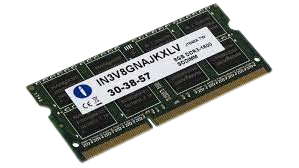

RAM (Random access memory)
RAM คืออะไร
RAM เป็นหน่วยความจำภายในสำหรับจัดเก็บโปรแกรมคอมพิวเตอร์และข้อมูลที่ใช้งานอยู่ในปัจจุบัน ทำให้โปรเซสเซอร์ของอุปกรณ์เข้าถึงได้อย่างรวดเร็ว เป็นหน่วยความจำแบบอ่าน/เขียนที่เก็บข้อมูลของเครื่องที่ใช้งานได้ แต่ข้อมูลจะถูกลบหากปิดเครื่อง Random Access Memory (RAM) จัดเก็บข้อมูลที่คอมพิวเตอร์ใช้งานอยู่เพื่อให้สามารถเข้าถึงได้อย่างรวดเร็ว
Ram (Random access memory) มีหน้าที่ทำอะไร
แรมทำอะไร? ข้อมูลที่ต้องเข้าถึงอย่างรวดเร็วจะถูกจัดเก็บไว้ใน RAM
RAM จำนวนมากถูกใช้เมื่อเปิดหลายโปรแกรมและเข้าถึงหลายไฟล์
RAM ช่วยให้คอมพิวเตอร์สามารถทำงานได้หลายอย่าง ช่วยให้คอมพิวเตอร์สามารถสลับระหว่างงานต่างๆ ได้
พร้อมๆ กันในขณะที่จดจำงานก่อนหน้าได้ บุคคลที่เปิดคอมพิวเตอร์ เปิดแผ่นงาน
Excel เพื่อแก้ไข แต่ตรวจสอบอีเมลก่อน จะใช้ RAM ในหลากหลายรูปแบบ
ในแง่นั้น RAM อนุญาตให้อุปกรณ์เรียกใช้หลายแอปพลิเคชันพร้อมกัน
RAM อยู่ภายใต้การใช้งานโดยคอมพิวเตอร์เสมอ เมื่อระบบคอมพิวเตอร์ช้าและไม่ตอบสนอง คอมพิวเตอร์จำเป็นต้องอัปเกรด RAM
ประวัติของ Ram (Random access memory)
RAM รูปแบบแรกได้รับการพัฒนาในปี 1947 และจุดประสงค์หลักคือการจัดเก็บข้อมูลเป็นจุดที่มีประจุไฟฟ้า
RAM ตัวที่สองที่จะนำมาใช้คือหน่วยความจำแกนแม่เหล็กซึ่งใช้วงแหวนโลหะเล็กๆ วงแหวนแต่ละวงจะจัดเก็บข้อมูลบิตที่สามารถเข้าถึงได้ทุกจุด
RAM สองประเภทคืออะไร?
RAM สองประเภทคืออะไร? Dynamic RAM และ Static RAM เป็น RAM ประเภทหลักที่ใช้อยู่ในปัจจุบัน SRAM มีราคาแพงกว่า ใช้พลังงานสูง และไม่จำเป็นต้องรีเฟรชอย่างต่อเนื่อง DRAM มีราคาถูกกว่า ใช้พลังงานน้อยกว่า และต้องการการรีเฟรชอย่างต่อเนื่อง
